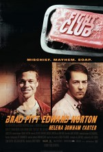

|  |
Filmin Konusu
Oregon Üniversitesinde yüksek lisansını yapan Chuck Palanhiuk'un uzak olmayan bir gelecekte geçen ve kafası karışık genç bir erkeği konu alan romanından yola çıkılarak çekilen Fight Club'da filmi anlatan, ünlü bir otomobil firmasında iyi bir işe sahiptir. Tek düze yaşamı kronik uykusuzluk sorunuyla çekilmez bir hale gelmiştir. Ailesi ve yakın bir arkadaşı olmayan Jack doktorunun tavsiyesi üzerine kanserli hastaların terapi grubuna katılır. Bu toplantılar esnasında Marla'yla tanışır o da genç adam gibi hasta olmadığı halde grubun toplantılarına katılmaktadır. Jack'in ve Marla'nın çabaları tüketici kültürünün anlamsızlığına karşı bir duruştur adeta kariyer sahibi ama yanlız insanların bir tepkisi. Jack'ın jenerasyonu ölü bir jenerasyondur. Bir yolculuk sonrası evinin yanmış olduğunu gördüğünde arayabileceği tek kişinin yolculuk sırasında tanıştığı sabun satıcısı Tyler Durden olmasıda adeta bunun bir kanıtıdır. İçilen birkaç biranın ardından park yerinde Tyler, kahramanımızı kendine vurması için kışırtacaktır. Aralarında başlayan bu kavga Jack'in hayatını değiştirecektir. Bir süre sonra Jack Tyler'ın yanına taşınır. Tyler'ın liderliğinde bir dövüş kulübünün kuruluşuyla bu kulübde sayıları elliyi aşmamak kaydıyla genç erkekler birbirleriyle dövüşmeye başlayacaklardır. Kısa sürede popüler hale gelen kulüp ve Tyler Durden hızlı bir şekilde bu ölü jenerasyonun mesihi haline gelir.
|